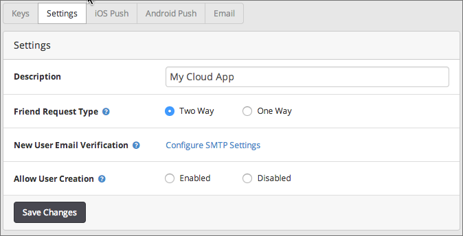
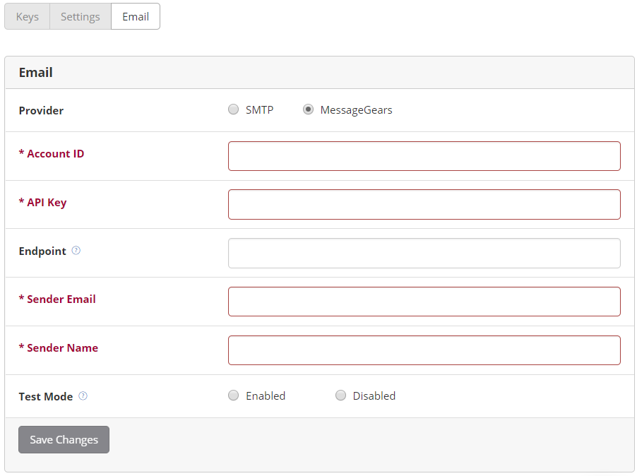

Configuring Cloud Services
The Cloud service Configuration tab lets you do the following:
-
View Cloud application keys
-
Configure application settings for Cloud services
-
Provide SMTP or Message Gears account information to send e-mails for notifications
Before configuring Cloud settings, make sure you select the correct environment from the Environment menu. The changes you make in the Cloud tab only affects the selected environment.
Keys
Click the Keys button to display the Cloud App Key. Click Show to display it. Use the App Key to make requests to the Cloud service.

Settings
Click the Settings button to configure application settings for Cloud services.
-
Description: Enter a Cloud application description.
-
Friend Request Type: Configures the behavior for the Friends objects. Select either:
-
Two Way (default): Once a user approves a friend request, both users are friends like on Facebook.
-
One Way: Once user A approves user B's friend request, the user B becomes a friend of user A, but user A does not become a friend of user B. Similar to the following behavior of Twitter.
-
-
New User Email Verification: Before using this option, you need to setup your SMTP settings. Once enabled, you can choose whether to send an e-mail to a user to verify their new user account.
-
Allow User Creation: Choose to enable or disable creating user accounts programmatically from the application. If this option is disabled, you can only use Dashboard to create new user accounts.

Click Save Changes to save any setting changes you made.
On the Email configuration tab, you can configure Dashboard to send email using SMTP or Message Gears on behalf of your application. To send an email you use custom_mailer/email_from_template.json REST method, the Cloud.Emails.send() method, or equivalent native iOS or Android method. To send an email you must specify an email template that you previously created in Dashboard (see Managing Email Templates for details).
Notes:
-
If not specified, the End Point URL for Message Gears defaults to https://api.messagegears.net/3.1/WebService.
To configure your application to send an email:
-
In the Provider field, select either SMTP or Message Gears and enter your SMTP or Message Gears server or account settings.
-
To have all sent emails sent to a specified email for testing purposes:
-
In the Test Mode field, select Enable.
-
In the Administrator's Email field, enter the email address where emails should be sent.
-
-
Click Save Changes.
